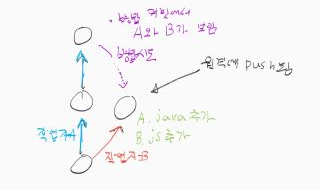

2. Git¶
2.1. 라이프 사이클¶
Untracked - Unmodified - Modified - Staged:
# 아래 명령어로 파일은 Untracked -> Staged 상태로 변경된다.
git add aa.txt
# 상태는 다음과 같이 변한다.
# Tracked 파일을 수정할 경우 Unmodified -> Modified
# 수정한 파일을 Staged로 올리면 Modified -> Staged
# Commit을 하면 Staged -> Unmodified
# 파일을 삭제하면 Unmodified -> Untrackted
2.2. diff¶
Modified이나 Staged가 아닌 파일을 비교할때는 git diff를 사용한다.
Staged인 파일을 비교할때는 git diff --staged 를 사용한다.
2.3. Rebase¶
갈라져 나온 브랜치(feature-1)에서 작업이 끝났을때 변경사항에 대한 패치를 만들어 합칠 브랜치(master)에 패치를 적용하는 것을 뜻한다. 합칠 브랜치는 Fast-forward 하여 Rebase 한 브랜치가 만든 커밋을 가르킨다.
명령어는 다음과 같다.:
# 갈라져 나온 브랜치 (feature-1)
git checkout feature-1
# 공통 조상 부터 패치를 만들어 master에 적용시킨다.
git rebase master
# master로 HEAD를 바꾼뒤 fast-forward한다.
git checkout master
git merge feature-1
히스토리를 선형적으로 정리할 수 있다는 장점이 있으며, 갈라져 나온 브랜치가 계속 관리되는 브랜치가 아닐때 rebase를 사용하면 좋다. 단 merge로 생성한 commit을 서버에 push한 뒤 다시 로컬에서 rebase로 정리한 뒤 commit을 하면 그 사이에 작업한 다른 개발자의 결과물은 이전 병합 commit을 가르키게 되므로 히스토리가 꼬이게 된다.
커밋을 삭제하고 싶을 경우 rebase를 이용해 에디팅 할 수 있다.:
git rebase -i HEAD~2 # 현재 헤드를 이전 커밋으로 바꾼다. "git reset 해시값" 도 사용 가능
git push -f origin master
2.4. Merge¶
Fast-forward는 commit 포인터를 그대로 다른 브랜치의 commit 포인터로 이동시키는 것이다. 단 이동할 commit의 조상이 현재 브랜치여야 한다.
git checkout master
git merge feature-1
Fast-forward가 가능하지 않을 경우 3-way merge를 수행한다. 공통조상, 현재 브랜치의 커밋, 병합할 브랜치의 커밋을 이용해 병합을 수행한다. commit 포인터를 생성된 commit으로 이동시킨다. 3-way merge 알고리즘 에 대해 잘 설명한 링크이다.
2.5. Reset¶
현재 브랜치를 유지한채 HEAD만 이전 커밋으로 이동시킬 수 있다.:
git reset --soft HEAD~ : HEAD만 바꾼다. Index나 Working Directory는 그대로 둔다.
git reset HEAD~ : HEAD를 바꾸고, Index 영역을 HEAD가 가르키는 상태로 바꾼다.
git reset --hard HEAD~ : HEAD는 바꾸고, Index과 Working Directory 영역을 HEAD가 가르키는 상태로 바꾼다.
2.6. Squash¶
Squash는 여러개의 커밋을 정리하는 것을 말한다. 커밋이 각각 존재할 필요가 없을 경우, 하나의 커밋으로 관리되어야 할 경우 Squash를 사용한다.
Git 도구에는 Squash를 위한 여러가지 명령을 제공한다. 대표적으로 git reset --soft xxxxxx 을 이용해서 현재 인덱스를 가지고 과거의 커밋을 수정하는 방법이 있다.
예를들어 3개의 커밋을 하나의 1개의 커밋으로 만들고 싶을때 다음 명령으로 작업을 진행하면 된다.
git fetch : 로컬 컴퓨터에 전체 브랜치 목록을 받아온다.
git checkout patch-1 : 특정 브랜치로 이동한다.
git reset --soft xxxxxx : 특정 커밋으로 이동한다. (Squash될 커밋 또는 그 커밋의 이전 커밋)
git commit --amend : **Squash될 커밋 중 첫번째 커밋으로 이동할 경우** 바로 커밋 메시지를 수정하여 커밋한다. 예를들어 Squash할 3개의 커밋중 첫번째 커밋으로 이동한 경우 사용할 수 있다.
git commit -m "xxxxx" : **Squash될 커밋의 이전 커밋으로 이동할 경우** 바로 커밋한다.
git push origin +patch-1 : 원격 저장소에 강제로 푸쉬한다.
2.7. Commit¶
2.7.1. 되돌리기¶
실수로 Staged하는 파일을 까먹었다면 --amend로 해결할 수 있다.:
git commit -m "commit missing some files"
git add forgotten_file
git commit --amend
실수로 Staged 했다면 reset으로 해결할 수 있다.:
git reset HEAD go_unstaged.md
실수로 Modified 했다면 checkout으로 해결할 수 있다.:
git checkout -- go_unmodified.md
2.8. Stash¶
Tracked Modified 이거나 Staged 인 파일들을 임시로 저장할 수 있다.:
git stash save
git stash list
git stash apply